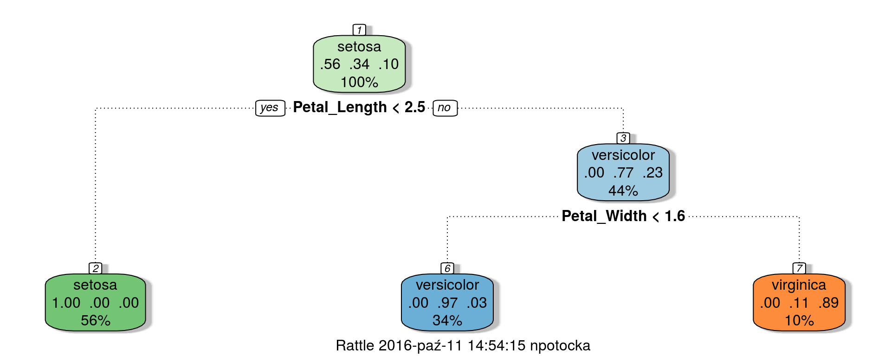

elastic packagelibrary('elastic')
connect(url = 'http://127.0.0.1', es_port = 9200)body <- '{
"query" : {
"filtered" : {
"filter" : {
"and" : {
"filters" : [ {
"range" : {
"Sepal_Length" : { "from" : 0, "to" : 6 }
}
} ]
}}}}
}'
iris_data <- Search(index = "iris", body = body, asdf = TRUE, size = 200)$hits$hits$`_source`More about the Elastic queries here.
elastic packageiris_data <- Search(index = "iris", body = body, asdf = TRUE, size = 200)$hits$hits$`_source`
head(iris_data) Sepal_Length Sepal_Width Petal_Length Petal_Width Species
1 4.6 3.1 1.5 0.2 setosa
2 5.1 3.8 1.5 0.3 setosa
3 5.0 3.2 1.2 0.2 setosa
4 4.4 3.0 1.3 0.2 setosa
5 5.1 3.4 1.5 0.2 setosa
6 5.9 3.0 4.2 1.5 versicolornrow(iris_data)[1] 177library(rpart)
fit <- rpart(Species ~ ., data = iris_data)
rattle::fancyRpartPlot(fit)
Kafka is a distributed streaming platform. It gets used for two broad classes of application:
rkafka packagecat(msg <- paste0('{"sendDate":"', Sys.time(),'","model":{',rules, "}")){"sendDate":"2016-10-11 13:02:52","model":{"setosa":{"Petal_Length<2.45"},"virginica":{"Petal_Length>=2.45","Petal_Width>=1.65"},"versicolor":{"Petal_Length>=2.45","Petal_Width<1.65"}}library(rkafka)
producer <- rkafka.createProducer("127.0.0.1:9092",
"sync","none",
"kafka.serializer.StringEncoder")
rkafka.send(producer,
topicName = "irisModel",
ip = "irisModel",
message = msg)
rkafka.closeProducer(producer)system2("zabbix_sender",
args = c('-z', 'server.zabbix.com', # Zabbix server host
'-s', 'serverofmyapp.com', # technical name of monitored host
'-k', 'iris_model_monitoring', # item key
'-o', 'status of my app' )) # value to sendAlso: RZabbix package.
FROM rocker/r-base
RUN R -e "install.packages(c('elastic', 'rpart', 'rattle', 'stringi', 'rkafka', 'RZabbix'),
repos='https://cran.rstudio.com/')"
RUN apt-get install -y zabbix-sender
RUN mkdir -p app/Rscripts
ADD Rscripts /app/Rscripts
ADD run.R /app/
WORKDIR /app
CMD R -f /app/run.R